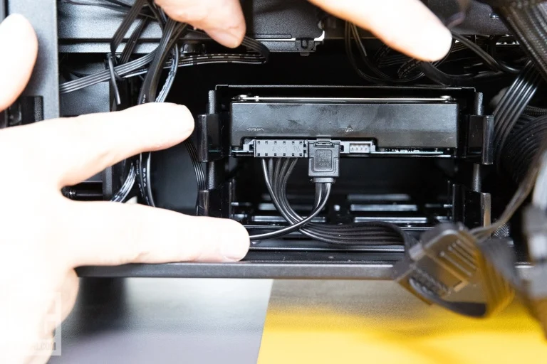

Depending on your PC build, you may be able to skip this step altogether; some users won't need any more storage than the M.2 boot drive in a motherboard slot. But if you happen to have an older 2.5-inch SSD that you'd like to install, or need massive storage in the form of an old-school 3.5-inch hard drive, this step is for you.
Our sample case has mounts for 2.5- and 3.5-inch drives. Hard drives are passe for some PC users, but given that you can get them in capacities of 20TB or more, they're nothing to be sneezed at, especially considering the price of SSDs larger than 2TB. A 3.5-inch bay can usually also accept a 2.5-inch drive via alternate screw placements.
For our build, we're installing a 3.5-inch hard drive. Remove one of the 3.5-inch trays next to the power supply by squeezing the tabs and use the mounting mechanism to snap in the drive. These particular trays have nibs that snap into the screw holes around the edges of the drive with a little flexing.
Other designs require screws. If you're installing a 2.5-inch drive in this tray, you'll screw it in place from the underside of the tray into the underside of the drive. Either way, make sure the data and power connectors face the outward end of the tray when you slide it back in.
Once the tray is back in place, hook up the drive's power and data cables. We mentioned the SATA power connector coming from the PSU. This cable has a host of connectors along its length, some inline and one in elbow-bend-style at the end. Use that one and plug it into the edge of the drive. You'll notice an L-shaped groove in the connector; it needs to match the L connector on the drive. You should get a gentle click without forcing it.
That connector strictly delivers power; you also need a data connection between drive and motherboard. In the box with your motherboard should be one or more SATA cables. That cable plugs into the drive in only one direction; you should also get a gentle snap. Route the cable around the back to the nearest cutaway near the cluster of SATA ports on the motherboard. (Our sample board has two pairs in different spots.) Some SATA cables have an elbow bend at one end, and some have a straight-through connector at one or both ends. Here we'll use the elbow bend for the connection to the drive to reduce strain on the cable.
Generally speaking, you'll plug the drive into the lowest-numbered SATA port on your motherboard, according to your manual. But there may be exceptions to that; check the manual for the optimal port to use depending on what else you have installed. Occasionally the motherboard may disable certain SATA ports if a given M.2 slot is in use. Here, we're using one of the side-mounted SATA ports.
As for 2.5-inch SATA solid-state drives, they install just like hard drives. Our Corsair case has additional 2.5-inch mounts on the back of the motherboard tray, which you can use for any 2.5-inch devices.

One side note: The CPU cooler cable cluster has a SATA power connection to help power all the cooler-related hardware such as the pump and the RGB lights. In the previous step, we attached one of the inline SATA connectors from the PSU to this connector, just as if we were attaching a SATA drive to power.